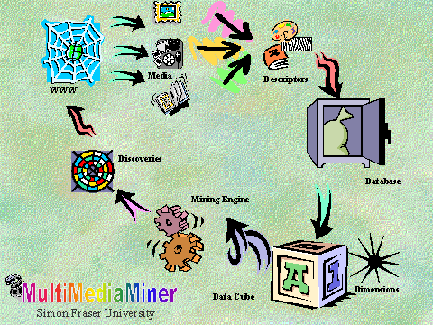
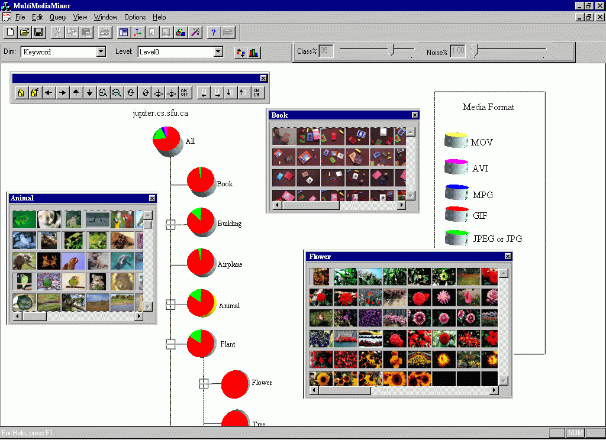

| MultiMediaMiner Poster at SIGMOD98
(10 slides) MultiMediaMiner: A System Prototype for MultiMedia Data Mining |
 |
| MultiMediaMiner Snapshots |  |
MultiMediaMiner has been designed based on our years of experience in the research and development of a relational data mining system, DBMiner, in the Intelligent Database Systems Research Laboratory, and C-BIRD a Content-Based Image Retrieval system from Digital Libraries, in the Vision and Media Laboratory.
MultiMediaMiner includes the construction of multimedia data cubes which facilitate multiple dimensional analysis of multimedia data, and the mining of multiple kinds of knowledge, including summarization, classification, and association, in image and video databases.